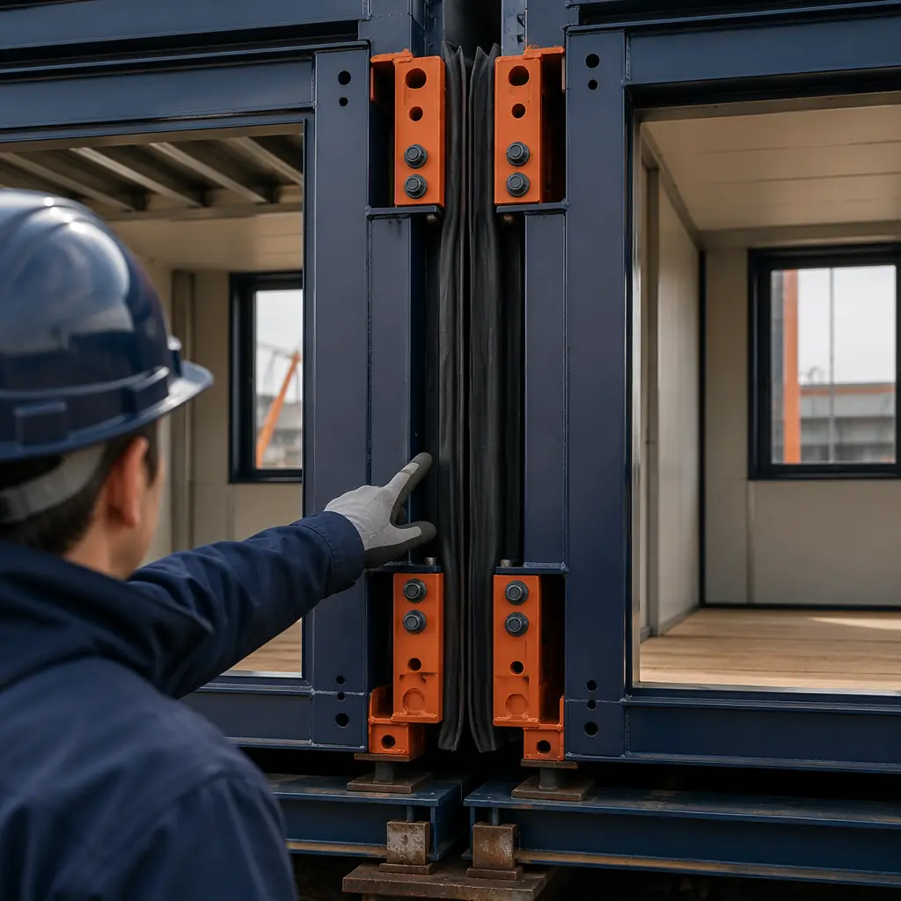
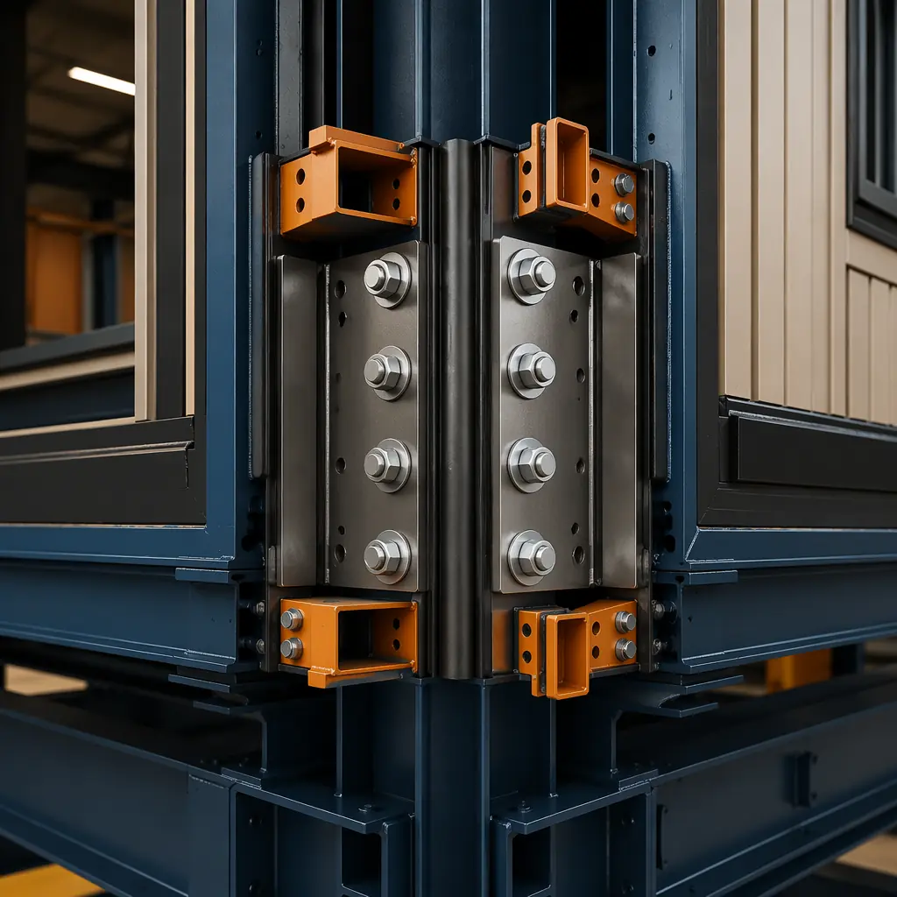
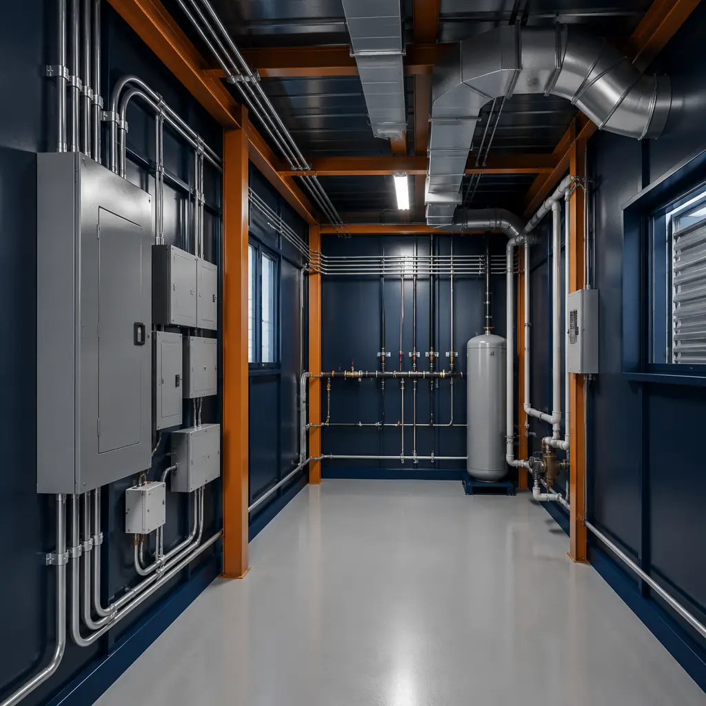
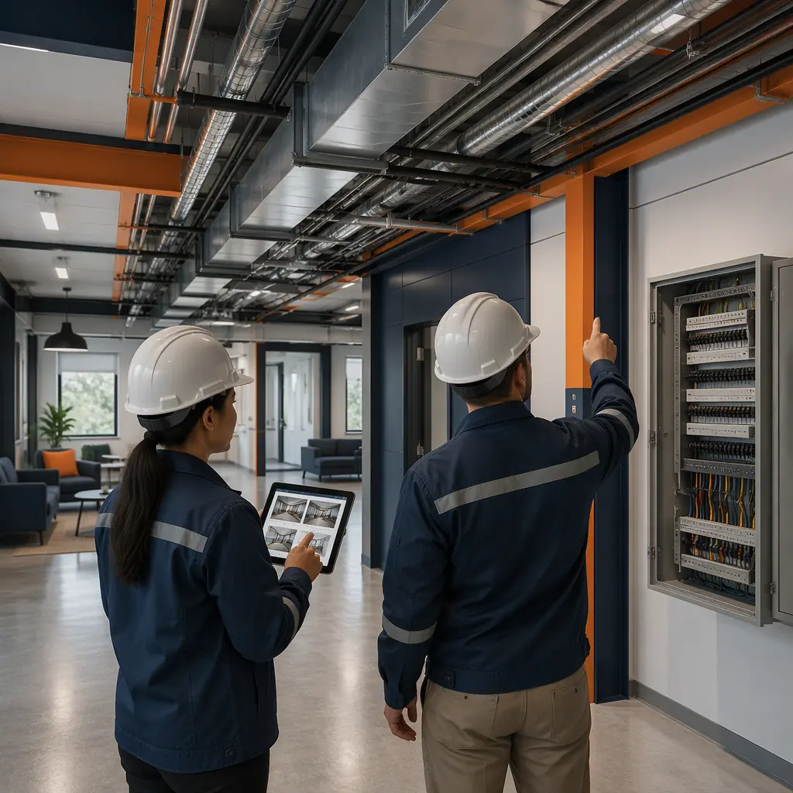

Commissioning is where the modular construction promise meets reality. A building assembled from 40 factory-built modules, each 70–90% complete upon delivery, requires a fundamentally different commissioning process than a stick-built structure where systems are installed sequentially on site. The modular approach compresses what would be months of trade-by-trade inspection into a concentrated verification exercise: the modules arrive with pre-installed electrical panels, plumbing risers, HVAC ductwork, fire suppression piping, and interior finishes — all of which must be confirmed functional across module-to-module joints that were never tested as a connected system in the factory. This article provides the modular-specific commissioning framework that bridges the gap between factory quality control — covered in our factory QC analysis — and the operational readiness that owners and facility managers require before accepting the keys.

Why Modular Commissioning Is Different — The Module Joint Is the Critical Path
In a traditional building, commissioning follows the construction sequence: structural frame, building envelope, MEP rough-in, interior finishes, systems startup, and functional performance testing. Each trade completes its scope before the next begins, and the commissioning agent verifies each system in the order it was installed. The process is linear and the responsibility boundaries are clear.
In a modular building, the sequence is inverted. The modules arrive on site with 70–90% of the work already complete, including elements that would normally be commissioned mid-sequence: in-wall plumbing, electrical rough-in, firestopping, insulation, and drywall. The commissioning agent cannot inspect these elements independently because they are sealed inside the module. Instead, the agent must rely on the factory's third-party inspection records — and then focus on what the factory could not test: the performance of connected systems across module joints, the integrity of the building envelope at module interfaces, and the functional integration of systems that were never operated together until the modules were connected on site.
This shift in commissioning focus is not a weakness of modular construction; it is a different distribution of verification effort. The factory handles what it does best: repeated, documented, in-process inspection at every production station. The site commissioning agent handles what only the site can verify: the interconnected building operating as a single system. Understanding this division is the first step to an efficient modular handover.

Pre-Handover Inspection Phases — The Four-Stage Modular Commissioning Protocol
Effective modular commissioning follows four sequential phases, each with its own verification scope, responsible parties, and acceptance criteria. Skipping a phase or compressing the schedule creates punch-list items that surface after occupancy — when they are most expensive to resolve.
Phase 1: Module Delivery Inspection (Per-Module, Before Setting)
Each module should be inspected at the staging yard or immediately upon delivery, before the crane lifts it into position. This is the last opportunity to identify transportation damage, factory defects, or missing components before the module becomes inaccessible behind connected modules and finished surfaces. The inspection covers:
- Structural integrity. Verify that the steel frame shows no deformation, that lifting points are intact, and that protective wrapping has not been compromised. Any structural damage sustained during transport requires a structural engineer's assessment before the module is set.
- Interior condition. Inspect drywall, flooring, millwork, and fixtures for transit damage. Modules travel hundreds of miles on flatbed trucks; vibration and road shock can crack drywall joints, loosen fixtures, and misalign pre-hung doors. Document every finding with photographs and GPS-tagged locations.
- MEP stub-outs. Confirm that all plumbing, electrical, and mechanical stub-outs are correctly positioned, capped, and undamaged. The module-to-module connections depend on precise alignment of these interfaces; a displaced plumbing riser or bent conduit can delay the connection of an entire floor by days.
- Documentation match. Verify the module serial number against the shipping manifest and the factory inspection records. Each module should arrive with a QR-coded documentation package that includes all third-party inspection reports, material certifications, and pressure test results for that specific module.
Phase 2: Module Connection and Envelope Verification (During Setting and Weatherproofing)
As modules are stacked and connected, the commissioning focus shifts to the interfaces between modules. These joints are the only part of the building that was not assembled in the factory, and they represent the highest concentration of commissioning risk in a modular project. The verification scope includes:
- Structural connections. Confirm that inter-module connections — typically bolted steel plates at column locations — are installed to the engineered torque specification, with documented torque wrench readings for every connection point. For a 40-module mid-rise building, this means 120–180 connection points, each requiring verification.
- Weather barrier continuity. The joint between modules creates a break in the building's air and water barrier. Verify that the module-to-module gaskets, sealants, and flashing are installed per the manufacturer's detail drawings — and test a representative sample of joints with a water spray rack or blower door test before interior finishes conceal the connections. Our building envelope systems guide covers the technical specification in detail.
- Acoustic isolation. Modular buildings achieve acoustic separation between units through the physical gap and acoustic seal at the module joint — analyzed in depth in our acoustic performance article. During commissioning, verify that acoustic gaskets and isolation materials are continuous across the full joint length, with no gaps or compression failures.
- Firestopping at joints. Module-to-module joints must be firestopped to maintain the fire-rated assembly between compartments. Verify that the firestopping material matches the tested assembly specification and that installation is continuous — no voids, no substitute materials — for every horizontal and vertical joint. This is a life-safety item; do not delegate it to a punch-list walkthrough.

Phase 3: MEP System Integration Testing (Connected Building, Pre-Energization)
With modules connected and the building envelope sealed, the commissioning agent can energize the building systems and test them as an integrated whole. This is the most technically demanding phase of modular commissioning because it reveals problems that neither the factory nor the site crew could detect independently:
- Electrical continuity and load balancing. Each module contains a pre-wired electrical subpanel. When modules are connected, these subpanels are fed from a central distribution system. Verify that each subpanel's phase rotation is correct, that the grounding system is continuous across module joints, and that the connected load on each phase is within the panel's rated capacity. An imbalanced load on a modular electrical system can cause nuisance tripping that is extremely difficult to trace after occupancy.
- Plumbing pressure and flow testing. Modular plumbing risers are connected at the module joint using flexible couplings or mechanical joints. Pressurize the entire plumbing system to 1.5 times the working pressure and hold for a minimum of 2 hours — longer than the standard 15-minute test, because slow leaks at module connections may not manifest in a short-duration test. Document the pressure at start, 30 minutes, 1 hour, and 2 hours. Any drop exceeding 2% requires investigation.
- HVAC balancing and duct leakage. Modular buildings typically use horizontal duct runs within each module, connected to vertical risers at the module joint. Test duct leakage at the joint connections using a duct blaster or pressure-decay method. The cumulative leakage across 40 module joints can be 3–5 times the leakage of a single joint, and the system's total external static pressure may differ from the design value because of the additional resistance at the joints. Rebalance the system after testing.
- Fire alarm and life safety integration. The fire alarm system must function as a single system across all modules — not as 40 independent detectors connected in series. Test every initiating device (smoke detector, pull station, flow switch) and verify that the notification appliances activate in the correct sequence and zone. The modular installation introduces additional wiring connections at module joints; each of these connections is a potential point of failure that must be individually verified.
A modular building's commissioning risk is concentrated at the joints. The modules themselves, assembled under factory conditions with documented quality control, have a defect rate that is typically 60–80% lower than site-built equivalents. But the 40–60 connection points per floor — the only part of the building assembled in the field — carry a disproportionate share of the commissioning burden. Allocate your inspection hours accordingly: 30% to the modules, 70% to the connections.
Phase 4: Functional Performance Testing and Occupancy Readiness
The final commissioning phase verifies that the building performs as designed under operational conditions. This is the phase where the developer, the commissioning agent, and the facility management team walk through together, and it serves as the formal handover from construction to operations:
- Whole-building blower door test. For projects targeting energy performance certification — LEED, Passive House, or local energy codes — conduct a whole-building air leakage test at the completed building, not just at the module joints. Modular buildings routinely outperform site-built buildings on air leakage because the factory-sealed modules have fewer penetration points, but the module joints are the variable. A target of 0.15–0.25 CFM50 per square foot of envelope area is achievable for a well-executed modular project, compared to 0.25–0.40 for traditional construction.
- Indoor environmental quality verification. Measure temperature, relative humidity, CO2, and VOC levels in a representative sample of occupied spaces after the HVAC system has been operating for a minimum of 72 hours. Modular buildings have the advantage of pre-installed finishes that have off-gassed in the factory rather than on site, so VOC levels are typically lower — but verify this with actual measurements, not assumptions.
- Controls and BMS commissioning. If the building includes a building management system or smart controls, verify that all sensors, actuators, and control sequences operate correctly across module boundaries. A temperature sensor in Module A-3 must communicate with the central controller regardless of how many module joints the signal crosses — and the system must be tested with all modules connected, not just individual zones.
- Documentation handover package. The developer should receive a complete set of as-built documentation that includes: factory third-party inspection reports for every module, pressure test certificates, fire-rated assembly certifications, material safety data sheets, equipment warranties, O&M manuals, and the modular manufacturer's structural warranty documentation — covered comprehensively in our warranties and guarantees guide.

The Modular Commissioning Checklist — 20-Point Handover Verification
The following checklist is designed specifically for modular construction, reflecting the division of verification between factory documentation review and site-based testing. Each item should be signed off by both the commissioning agent and the owner's representative before the certificate of substantial completion is issued.
| # | Verification Item | Verification Method | Acceptance Criteria |
|---|---|---|---|
| 1 | Module delivery condition | Visual inspection + photo documentation | No structural deformation, finishes intact, MEP stub-outs undamaged |
| 2 | Factory inspection records | Documentation review | Complete records for 100% of modules, all inspections passed |
| 3 | Structural module connections | Torque wrench verification | 100% of connections at specified torque, documented by location |
| 4 | Weather barrier continuity | Water spray test + visual | No water penetration at any module joint, gaskets continuous |
| 5 | Firestopping at all joints | Visual inspection of 100% of joints | Specified material, continuous installation, no voids |
| 6 | Acoustic isolation at joints | Visual + sample field STC testing | Gasket continuous, field STC within 3 dB of lab-tested assembly |
| 7 | Electrical phase rotation | Phase rotation meter at each panel | Correct rotation at 100% of subpanels |
| 8 | Grounding continuity | Ground resistance test across joints | <1 ohm across all module joints |
| 9 | Plumbing pressure test | Hydrostatic at 1.5x working pressure, 2-hour hold | Pressure drop <2% over 2 hours |
| 10 | HVAC duct leakage | Duct blaster at joint connections | <5% total system leakage at design static pressure |
| 11 | Fire alarm integration | Functional test of all initiating devices | 100% devices tested, correct zone/sequence activation |
| 12 | Whole-building air leakage | Blower door test (ASTM E779) | <0.25 CFM50/sq ft envelope |
| 13 | IEQ measurements | Temp/RH/CO2/VOC monitoring, 72-hr min | Within ASHRAE 55 and 62.1 ranges |
| 14 | BMS/controls commissioning | Point-to-point + sequence of operations test | All points reading correctly, all sequences verified |
| 15 | Elevator/escalator (if applicable) | Third-party inspection certificate | Jurisdictional approval received |
| 16 | Accessibility compliance | ADA/accessibility audit | All accessible routes, clearances, and fixtures compliant |
| 17 | O&M manual delivery | Documentation review | Complete for all equipment, including factory-installed systems |
| 18 | As-built drawings | Review against installation | Accurate to field conditions, all module joints documented |
| 19 | Warranty documentation | Documentation review | Manufacturer + installer warranties registered, structural warranty active |
| 20 | Certificate of occupancy | Jurisdictional approval | Temporary or permanent CO issued |
The Fast-Track Modular Commissioning Timeline
One of the most significant advantages of modular construction is that commissioning can begin earlier and finish faster than on a traditional project. Because modules arrive with systems pre-installed, the MEP integration testing can begin as soon as the first floor of modules is connected — even while upper-floor modules are still being set. This parallel commissioning reduces the critical path duration of the handover phase from 4–8 weeks (traditional) to 2–3 weeks (modular), provided the commissioning team is on site and ready to test as each floor is completed.
For a modular project like a multi-family apartment building or commercial office, the timeline typically looks like this: modules arrive over 2–3 weeks, floors 1–2 are connected by week 1, MEP testing on floors 1–2 begins in week 2 while floors 3–4 are being set, and by week 4 the entire building is commissioned and ready for the owner's final walkthrough. On a traditional project, the same building would require 6–8 weeks of sequential trade-by-trade commissioning after the building is dried in. The modular timeline advantage — 2–4 weeks earlier occupancy — generates real financial returns that compound the construction cost savings analyzed in our ROI guide for developers.
The most expensive commissioning finding is the one discovered after occupancy. For modular buildings, the highest-yield investment in the commissioning budget is not more equipment or more tests — it is scheduling the commissioning agent to be on site during module setting, not after. The window to inspect module joints closes when the next module is stacked on top of them. Miss that window, and you are commissioning blind.